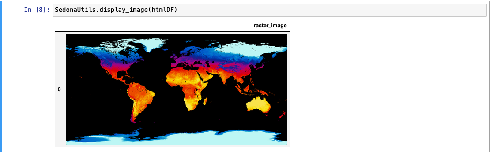

栅格 DataFrame / SQL 应用
Note
Sedona 中所有栅格函数均使用从 1 开始的索引，唯一例外是 map algebra 函数，它使用从 0 开始的索引。
Note
Sedona 假定地理坐标按 lon/lat 顺序排列。如果您的数据是 lat/lon 顺序，请使用 ST_FlipCoordinates 交换 X 与 Y。
自 v1.1.0 起，Sedona SQL 在 DataFrame 与 SQL 中支持栅格数据源与栅格算子。Scala、Java、Python、R 等所有 Sedona 语言绑定都已支持栅格能力。
本页介绍如何使用 SedonaSQL 管理栅格数据。
var myDataFrame = sedona.sql("YOUR_SQL")
myDataFrame.createOrReplaceTempView("rasterDf")
Dataset<Row> myDataFrame = sedona.sql("YOUR_SQL")
myDataFrame.createOrReplaceTempView("rasterDf")
myDataFrame = sedona.sql("YOUR_SQL")
myDataFrame.createOrReplaceTempView("rasterDf")
SedonaSQL 详细 API 说明请参阅 SedonaSQL API。示例栅格数据可在 Sedona GitHub 仓库 中找到。
配置依赖¶
- 阅读 Sedona Maven Central 坐标，并在 build.sbt 或 pom.xml 中添加 Sedona 依赖。
- 在 build.sbt 或 pom.xml 中添加 Apache Spark core 与 Apache SparkSQL 依赖。
- 参考 SQL 示例项目。
- 请阅读 快速开始 安装 Sedona Python。
- 本教程基于 Sedona SQL Jupyter Notebook 示例。
创建 Sedona 配置¶
在程序起始处使用以下代码创建 Sedona 配置。如果您已经有了由 Wherobots / AWS EMR / Databricks 创建的 SparkSession（通常名为 spark），可跳过此步骤直接使用 spark。
可以在 builder 中追加额外的 Spark 运行时配置，例如 SedonaContext.builder().config("spark.sql.autoBroadcastJoinThreshold", "10485760")。
import org.apache.sedona.spark.SedonaContext
val config = SedonaContext.builder()
.master("local[*]") // 集群模式下请删除此行
.appName("readTestScala") // 改成合适的名字
.getOrCreate()
SedonaContext.builder() 之后追加以下行启用 Sedona Kryo 序列化器：
.config("spark.kryo.registrator", classOf[SedonaVizKryoRegistrator].getName) // org.apache.sedona.viz.core.Serde.SedonaVizKryoRegistrator
import org.apache.sedona.spark.SedonaContext;
SparkSession config = SedonaContext.builder()
.master("local[*]") // 集群模式下请删除此行
.appName("readTestScala") // 改成合适的名字
.getOrCreate()
SedonaContext.builder() 之后追加以下行启用 Sedona Kryo 序列化器：
.config("spark.kryo.registrator", SedonaVizKryoRegistrator.class.getName) // org.apache.sedona.viz.core.Serde.SedonaVizKryoRegistrator
from sedona.spark import *
config = SedonaContext.builder() .\
config('spark.jars.packages',
'org.apache.sedona:sedona-spark-shaded-3.3_2.12:1.9.0,'
'org.datasyslab:geotools-wrapper:1.9.0-33.5'). \
getOrCreate()
3.3 替换为对应的 Spark major.minor 版本，例如 sedona-spark-shaded-3.4_2.12:1.9.0。
初始化 SedonaContext¶
在创建 Sedona 配置之后加上以下代码。如果您已经有了由 Wherobots / AWS EMR / Databricks 创建的 SparkSession（通常名为 spark），请改为调用 SedonaContext.create(spark)。
import org.apache.sedona.spark.SedonaContext
val sedona = SedonaContext.create(config)
import org.apache.sedona.spark.SedonaContext;
SparkSession sedona = SedonaContext.create(config)
from sedona.spark import *
sedona = SedonaContext.create(config)
也可以通过 spark-submit / spark-shell 传入 --conf spark.sql.extensions=org.apache.sedona.sql.SedonaSqlExtensions 一并完成注册。
加载 GeoTiff 数据¶
加载 GeoTiff 栅格数据的推荐方式是 raster 数据源。它会加载 GeoTiff 文件并自动将其切分为较小的 tile，每个 tile 在结果 DataFrame 中作为一行，并以 Raster 类型存储。
var rasterDf = sedona.read.format("raster").load("/some/path/*.tif")
rasterDf.createOrReplaceTempView("rasterDf")
rasterDf.show()
Dataset<Row> rasterDf = sedona.read().format("raster").load("/some/path/*.tif");
rasterDf.createOrReplaceTempView("rasterDf");
rasterDf.show();
rasterDf = sedona.read.format("raster").load("/some/path/*.tif")
rasterDf.createOrReplaceTempView("rasterDf")
rasterDf.show()
输出大致如下：
+--------------------+---+---+----+
| rast| x| y|name|
+--------------------+---+---+----+
|GridCoverage2D["g...| 0| 0| ...|
|GridCoverage2D["g...| 1| 0| ...|
|GridCoverage2D["g...| 2| 0| ...|
...
各列含义：
rast：以Raster类型表示的栅格数据。x：tile 的 X 坐标（从 0 开始）；只有未禁用 retile 时才会出现。y：tile 的 Y 坐标（从 0 开始）；同上。name：栅格文件名。
Tiling 选项¶
默认情况下启用 tiling（retile = true），且 tile 大小由 GeoTiff 的内部 tile 方案决定，无需手动指定 tileWidth 或 tileHeight。建议栅格数据使用 Cloud Optimized GeoTIFF (COG) 格式，因为它通常会把像素数据组织为正方形 tile。
也可以可选地覆盖 tile 大小，或完全禁用 tiling：
| 选项 | 默认值 | 说明 |
|---|---|---|
retile |
true |
是否启用 tiling。设为 false 则把整张栅格作为一行加载。 |
tileWidth |
GeoTiff 内部 tile 宽度 | 可选。手动指定每个 tile 的宽度（像素）。 |
tileHeight |
若设置了 tileWidth 则与之相同，否则使用 GeoTiff 内部 tile 高度 |
可选。手动指定每个 tile 的高度（像素）。 |
padWithNoData |
false |
当右、下边缘的 tile 小于指定大小时，使用 NODATA 值进行填充。 |
覆盖 tile 大小：
rasterDf = (
sedona.read.format("raster")
.option("tileWidth", "256")
.option("tileHeight", "256")
.load("/some/path/*.tif")
)
Note
如果栅格数据的内部 tile 方案不利于切分，raster 数据源会抛出错误。可以通过 option("retile", "false") 关闭自动切分，或手动指定 tile 大小绕过该问题。更彻底的做法是使用 gdal_translate 等工具把数据转换为 COG 格式。
从目录中加载栅格文件¶
raster 数据源也支持 Spark 通用文件源选项，如 option("pathGlobFilter", "*.tif*") 与 option("recursiveFileLookup", "true")。例如，递归加载某目录下所有 .tif 文件：
rasterDf = (
sedona.read.format("raster")
.option("recursiveFileLookup", "true")
.option("pathGlobFilter", "*.tif*")
.load(path_to_raster_data_folder)
)
Tip
当传入路径以 / 结尾时，raster 数据源会递归地在该目录及其子目录中查找栅格文件。这等价于不带尾部 / 并设置 option("recursiveFileLookup", "true")。
Tip
加载栅格之后，可以在 Jupyter Notebook 中通过 SedonaUtils.display_image(df) 快速预览：它会自动识别栅格列并以图像形式渲染。详情请参阅 栅格可视化文档。
加载非 GeoTiff 数据（NetCDF、Arc Grid）¶
对于 NetCDF、Arc Info ASCII Grid 等非 GeoTiff 栅格格式，请配合 Spark 内置的 binaryFile 数据源与 Sedona 的栅格构造器一起使用。
步骤 1：加载为 binary DataFrame¶
var rawDf = sedona.read.format("binaryFile").load(path_to_raster_data)
rawDf.createOrReplaceTempView("rawdf")
rawDf.show()
Dataset<Row> rawDf = sedona.read().format("binaryFile").load(path_to_raster_data);
rawDf.createOrReplaceTempView("rawdf");
rawDf.show();
rawDf = sedona.read.format("binaryFile").load(path_to_raster_data)
rawDf.createOrReplaceTempView("rawdf")
rawDf.show()
输出大致如下：
| path| modificationTime|length| content|
+--------------------+--------------------+------+--------------------+
|file:/Download/ra...|2023-09-06 16:24:...|174803|[49 49 2A 00 08 0...|
如需加载多个栅格文件，可递归加载：
rawDf = (
sedona.read.format("binaryFile")
.option("recursiveFileLookup", "true")
.option("pathGlobFilter", "*.asc*")
.load(path_to_raster_data_folder)
)
rawDf.createOrReplaceTempView("rawdf")
rawDf.show()
步骤 2：创建 Raster 类型列¶
SedonaSQL 中所有栅格运算都要求 Raster 类型对象，可使用以下任一构造器：
从 GeoTiff 创建¶
SELECT RS_FromGeoTiff(content) AS rast, modificationTime, length, path FROM rawdf
从 Arc Grid 创建¶
SELECT RS_FromArcInfoAsciiGrid(content) AS rast, modificationTime, length, path FROM rawdf
从 NetCDF 创建¶
加载 NetCDF 文件的方法详见 RS_FromNetCDF。
校验栅格列是否创建成功：
rasterDf.printSchema()
root
|-- rast: raster (nullable = true)
|-- modificationTime: timestamp (nullable = true)
|-- length: long (nullable = true)
|-- path: string (nullable = true)
栅格的元数据¶
Sedona 提供了获取栅格元数据的函数，以及获取栅格 world file 的函数。
元数据¶
该函数返回一个数组，包含栅格的所有必要信息，详见 RS_MetaData。
SELECT RS_MetaData(rast) FROM rasterDf
输出形如：
[-1.3095817809482181E7, 4021262.7487925636, 512.0, 517.0, 72.32861272132695, -72.32861272132695, 0.0, 0.0, 3857.0, 1.0]
数组中前两个元素是栅格图像左上像素的真实地理坐标（如经纬度），接下来的两个元素是栅格的像素维度。
World File¶
world file 有 GDAL 与 ESRI 两种 georeference。详情参见 RS_GeoReference。
SELECT RS_GeoReference(rast, "ESRI") FROM rasterDf
输出如下：
72.328613
0.000000
0.000000
-72.328613
-13095781.645176
4021226.584486
world file 用于通过建立图像到世界坐标的变换，把真实地理坐标对应到图像像素，从而实现 georeference 与 geolocate。
栅格操作¶
自 v1.5.0 起 Sedona 增加了大量栅格操作能力。下面给出几个示例查询。
Note
更多栅格操作请参阅 SedonaSQL 栅格算子。
坐标转换¶
Sedona 支持按需在像素坐标与世界坐标之间互相转换。
PixelAsPoint¶
使用 RS_PixelAsPoint 将像素坐标转换为世界坐标位置：
SELECT RS_PixelAsPoint(rast, 450, 400) FROM rasterDf
输出：
POINT (-13063342 3992403.75)
世界坐标转栅格坐标¶
使用 RS_WorldToRasterCoord 把世界坐标位置转换为像素坐标。仅取 X 用 RS_WorldToRasterCoordX，仅取 Y 用 RS_WorldToRasterCoordY。
SELECT RS_WorldToRasterCoord(rast, -1.3063342E7, 3992403.75)
输出：
POINT (450 400)
像素操作¶
使用 RS_Values 获取由点几何数组指定位置上的栅格值。这些点几何的坐标表示真实世界位置。
SELECT RS_Values(rast, Array(ST_Point(-13063342, 3992403.75), ST_Point(-13074192, 3996020)))
输出：
[132.0, 148.0]
要在网格或某个几何区域内修改像素值，可使用 RS_SetValues：
SELECT RS_SetValues(
rast, 1, 250, 260, 3, 3,
Array(10, 12, 17, 26, 28, 37, 43, 64, 66)
)
详细用法请点击上面的链接。
波段操作¶
Sedona 提供了从栅格图像中选择特定波段并构造新栅格的 API。例如，使用 RS_Band 从栅格中选取 2 个波段以构造多波段栅格。
下面以一张 多波段栅格 为例进行演示，加载与转换为 raster 类型的方式与前文相同。
SELECT RS_Band(colorRaster, Array(1, 2))
如果有多个单波段栅格，希望把额外的波段加入栅格以执行 map algebra 操作，可使用 RS_AddBand：
SELECT RS_AddBand(raster1, raster2, 1, 2)
执行后 raster1 会附带上 raster2 中指定的波段。
重采样栅格数据¶
Sedona 支持使用最近邻、双线性、双三次等不同插值方法对栅格数据进行重采样，以改变 cell 大小或对齐栅格网格，详见 RS_Resample。
SELECT RS_Resample(rast, 50, -50, -13063342, 3992403.75, true, "bicubic")
更多用法请参考链接中的文档。
执行 map algebra 操作¶
map algebra 是一种通过数学表达式对栅格进行计算的方法。表达式既可以是简单的算术运算，也可以是多个运算的复杂组合。
归一化植被指数（NDVI）是一个简单的图形指标，常用于分析航天平台的遥感测量结果，评估观测目标是否包含活体绿色植被：
NDVI = (NIR - Red) / (NIR + Red)
其中 NIR 表示近红外波段，Red 表示红色波段。
SELECT RS_MapAlgebra(raster, 'D', 'out = (rast[3] - rast[0]) / (rast[3] + rast[0]);') as ndvi FROM raster_table
更多内容请参阅 Map Algebra API。
栅格与矢量数据的互通¶
几何转栅格¶
可以使用 RS_AsRaster 把几何对象栅格化：
SELECT RS_AsRaster(
ST_GeomFromWKT('POLYGON((150 150, 220 260, 190 300, 300 220, 150 150))'),
RS_MakeEmptyRaster(1, 'b', 4, 6, 1, -1, 1),
'b', 230
)
针对该矢量生成的图像如下：
Note
示例图像中的矢量坐标做了适度放大以便观察，实际使用时不一定与本例完全一致。
空间范围查询¶
Sedona 提供了基于几何窗口的栅格谓词来执行范围查询。例如使用 RS_Intersects：
SELECT rast FROM rasterDf WHERE RS_Intersect(rast, ST_GeomFromWKT('POLYGON((0 0, 0 10, 10 10, 10 0, 0 0))'))
空间连接查询¶
Sedona 的栅格谓词同样支持基于栅格列与几何列的空间连接：
SELECT r.rast, g.geom FROM rasterDf r, geomDf g WHERE RS_Interest(r.rast, g.geom)
可视化栅格图像¶
Sedona 提供了若干 API 把栅格数据以图像形式可视化。
Base64 字符串¶
RS_AsBase64 将栅格编码为 Base64 字符串，可以使用 在线解码器 查看：
SELECT RS_AsBase64(rast) FROM rasterDf
HTML Image¶
RS_AsImage 返回一个 HTML <img> 标签，可以在 HTML viewer 或 Jupyter Notebook 中查看：
SELECT RS_AsImage(rast, 500) FROM rasterDf
输出如下：

Tip
在 Jupyter Notebook 中使用 SedonaUtils.display_image 即可直接渲染栅格，无需手动调用 RS_AsImage：
from sedona.spark import SedonaUtils
SedonaUtils.display_image(rasterDf)
详情请参阅 在 Jupyter 中显示栅格。
二维矩阵¶
如果上述 API 不能满足需求，Sedona 还提供了将栅格数据可视化为二维矩阵的 API：
SELECT RS_AsMatrix(rast) FROM rasterDf
输出形如：
| 1 3 4 0|
| 2 9 10 11|
| 3 4 5 6|
更多用法请参阅 栅格可视化文档。
保存到永久存储¶
保存栅格数据分两步：(1) 使用某个 RS_AsXXX 函数将 Raster 列转换为二进制格式；(2) 通过 Sedona 的 raster 数据源 writer 把二进制 DataFrame 写入文件。
步骤 1：转换为二进制格式¶
可选的输出格式函数：
| 函数 | 格式 | 说明 |
|---|---|---|
| RS_AsGeoTiff | GeoTiff | 通用栅格格式，可选压缩 |
| RS_AsCOG | Cloud Optimized GeoTiff | 适合云存储，支持高效的范围读取 |
| RS_AsArcGrid | Arc Grid | 基于 ASCII 的格式，仅支持单波段 |
| RS_AsPNG | PNG | 图像格式，仅支持无符号整型像素 |
SELECT RS_AsGeoTiff(rast) AS raster_binary FROM rasterDf
步骤 2：写入文件¶
使用 Sedona 内置的 raster 数据源写出二进制 DataFrame：
rasterDf.withColumn("raster_binary", expr("RS_AsGeoTiff(rast)"))
.write.format("raster").mode("overwrite").save("my_raster_file")
rasterDf.withColumn("raster_binary", expr("RS_AsGeoTiff(rast)")).write.format(
"raster"
).mode("overwrite").save("my_raster_file")
writer 数据源的常用选项：
| 选项 | 默认值 | 说明 |
|---|---|---|
rasterField |
schema 中最后一个 binary 列 |
要写出的二进制列名。当 DataFrame 含有多个 binary 列时，强烈建议显式指定。 |
fileExtension |
.tiff |
输出文件的扩展名（如 .png、.asc）。 |
pathField |
None | 包含输出文件名的列名。仅使用基础文件名（去掉目录），并把已有扩展名替换为 fileExtension。未设置时每个文件以随机 UUID 命名。 |
useDirectCommitter |
true |
若为 true，文件直接写入目标位置；若为 false，先写入临时位置再移动。false 速度较慢，尤其在 S3 等对象存储上。 |
带全部选项的示例：
rasterDf.withColumn("raster_binary", expr("RS_AsGeoTiff(rast)"))
.write.format("raster")
.option("rasterField", "raster_binary")
.option("pathField", "name")
.option("fileExtension", ".tiff")
.mode("overwrite")
.save("my_raster_file")
rasterDf.withColumn("raster_binary", expr("RS_AsGeoTiff(rast)")).write.format(
"raster"
).option("rasterField", "raster_binary").option("pathField", "name").option(
"fileExtension", ".tiff"
).mode(
"overwrite"
).save(
"my_raster_file"
)
写出后的文件结构形如：
my_raster_file
- part-00000-6c7af016-c371-4564-886d-1690f3b27ca8-c000
- test1.tiff
- .test1.tiff.crc
- part-00001-6c7af016-c371-4564-886d-1690f3b27ca8-c000
- test2.tiff
- .test2.tiff.crc
- _SUCCESS
读回保存的栅格：
rasterDf = sedona.read.format("raster").load("my_raster_file/*/*.tiff")
在 Python 中收集并本地处理带栅格列的 DataFrame¶
自 v1.6.0 起，Sedona 支持把含有栅格列的 DataFrame 收集（collect）到 Python 端进行本地处理。栅格对象在 Python 端表示为 SedonaRaster，可对其执行各种栅格操作。
Tip
如果只是希望在 Jupyter 中快速预览栅格，无需 collect DataFrame，使用 SedonaUtils.display_image(df) 即可：
from sedona.spark import SedonaUtils
SedonaUtils.display_image(df_raster)
df_raster = (
sedona.read.format("raster").option("retile", "false").load("/path/to/raster.tif")
)
rows = df_raster.collect()
raster = rows[0].rast
raster # <sedona.raster.sedona_raster.InDbSedonaRaster at 0x1618fb1f0>
通过 SedonaRaster 对象的属性可以读取栅格元数据：
raster.width # 栅格宽度
raster.height # 栅格高度
raster.affine_trans # 仿射变换矩阵
raster.crs_wkt # 以 WKT 表示的坐标参考系
可以通过 as_numpy 或 as_numpy_masked 方法获取栅格波段数据的 numpy 数组，数组按 CHW 顺序组织。
raster.as_numpy() # 栅格的 numpy 数组
raster.as_numpy_masked() # nodata 值被掩为 nan 的 numpy 数组
如果希望使用 rasterio 处理栅格数据，可以通过 as_rasterio 方法获取一个 rasterio.DatasetReader 对象。
Note
使用此方法需要安装 rasterio 包（>= 1.2.10）：pip install rasterio。
ds = raster.as_rasterio() # rasterio.DatasetReader 对象
# 使用 rasterio 处理栅格
band1 = ds.read(1) # 读取第 1 个波段
编写处理栅格数据的 Python UDF¶
可以编写 Python UDF 来处理栅格数据。UDF 接收 SedonaRaster 对象作为输入，返回任意 Spark 数据类型。下面是一个计算栅格均值的 UDF 示例：
from pyspark.sql.types import DoubleType
def mean_udf(raster):
return float(raster.as_numpy().mean())
sedona.udf.register("mean_udf", mean_udf, DoubleType())
df_raster.withColumn("mean", expr("mean_udf(rast)")).show()
+--------------------+------------------+
| rast| mean|
+--------------------+------------------+
|GridCoverage2D["g...|1542.8092886117788|
+--------------------+------------------+
返回栅格对象的 UDF 较为棘手，因为 Sedona 目前还不支持序列化 Python 端的栅格对象。但可以让 UDF 返回波段数据数组，再通过 RS_MakeRaster 构造栅格对象。下面是一个基于输入栅格第一个波段创建掩码栅格的 Python UDF：
from pyspark.sql.types import ArrayType, DoubleType
import numpy as np
def mask_udf(raster):
band1 = raster.as_numpy()[0, :, :]
mask = (band1 < 1400).astype(np.float64)
return mask.flatten().tolist()
sedona.udf.register("mask_udf", band_udf, ArrayType(DoubleType()))
df_raster.withColumn("mask", expr("mask_udf(rast)")).withColumn(
"mask_rast", expr("RS_MakeRaster(rast, 'I', mask)")
).show()
+--------------------+--------------------+--------------------+
| rast| mask| mask_rast|
+--------------------+--------------------+--------------------+
|GridCoverage2D["g...|[0.0, 0.0, 0.0, 0...|GridCoverage2D["g...|
+--------------------+--------------------+--------------------+
性能优化¶
处理大规模栅格数据集时，请参考 在 Parquet 中存储栅格几何对象 一文中的性能优化建议。